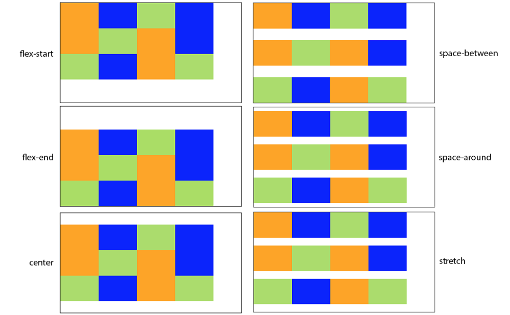

Mise en page avec FlexBox
Cette partie est aussi reprise du cours de Mathieu Nebra sur Openclassroom : Apprenez à créer votre site web avec HTML5 et CSS3
Il est temps d'apprendre à mettre en page notre site. Placer un en-tête, des menus sur le côté, choisir où apparaît une information, etc. C'est la pièce manquante du puzzle pour que nous puissions enfin créer un site complet !
Il existe plusieurs façons de réaliser la mise en page d'un site. Au fur et à mesure de l'évolution des langages web et des navigateurs, différentes techniques sont apparues :
- Au début, les webmasters utilisaient des tableaux HTML pour faire la mise en page.
Aujourd'hui cette technique est à proscrire !
- Puis, CSS est apparu et on a commencé à faire une mise en page à l'aide de la propriété
float.
Aujourd'hui cette technique est a éviter car elle avait de gros inconvénients.
- Une autre, plus pratique, a consisté à créer des éléments de type
inline-block.
Cette technique est acceptable mais montre rapidement ces limites et, franchement, un élément à la fois inline et block, c'est bizarre conceptuellement parlant !
- Aujourd'hui, une bien meilleure technique encore existe :Flexbox ! Elle permet toutes les folies (ou presque). De plus, Flexbox est désormais reconnu par tous les navigateurs récents !
C'est celle que je vous recommande d'utiliser lorsque vous créez un nouveau site.
Pour ceux qui souhaite plus d'information sur les autres techniques de mise en page plus anciennes, je vous invite à consulter le chapitre "Quelques autres techniques de mise en page" du toujours excellent cours de Mathieu Nebra.
Un conteneur, des éléments
Le principe de la mise en page avec Flexbox est simple : vous définissez un conteneur (une boîte), dans laquelle vous placez plusieurs éléments. Imaginez un carton dans lequel vous rangez plusieurs objets : c'est le principe !
Sur une même page web, vous pouvez sans problème avoir plusieurs conteneurs (plusieurs cartons si vous préférez ! Ce sera à vous d'en créer autant que nécessaire pour obtenir la mise en page que vous voulez.
Le conteneur est une balise HTML, et les éléments sont d'autres balises HTML à l'intérieur.
1 2 3 4 5 | |
Je prends ici pour l'exemple des élements <section> et <article> mais ca fonctionne, quelque soit la balise HTML. Cela pourrait aussi bien être une balise <header>qui contient une balise <h2>, une balise <p> et une balise <img>.
De même, pour l'exemple il n'y a pas de contenu dans les éléments <article> mais nous pourrions tout a fait en mettre.
Si vous avez suivi jusque là, par défaut, les éléments vont se mettre les uns en-dessous des autres puisqu'ils sont de type block (cf. Ch3 - le modèle de boîte).
Si je mets une taille et une couleur de fond aux éléments, voici comment ils s'organisent :
 Comportement normal des éléments de type
Comportement normal des éléments de type block
C'est le comportement normal dont nous avons l'habitude.
Pour jouer avec les propriétés que nous allons aborder, vous pouvez utilisez l'éditeur CodePen dans sa version en ligne. Les bases html et css sont déjà en place, vous n'avez plus qu'à ajouter des propriétés pour voir les changements.
Soyez flex !
Découvrons maintenant Flexbox. Avec une seule propriété CSS, tout change ! Cette propriété, c'est flex, et je l'applique au conteneur (dans notre exemple ma <section>) :
1 2 3 4 | |
Les blocs se placent par défaut côte à côte. Magique !
 Un coup de flex et les blocs se positionnent côte à côte !
Un coup de flex et les blocs se positionnent côte à côte !
La direction
Flexbox nous permet d'agencer ces éléments dans le sens que l'on veut. Avec flex-direction, on peut les positionner verticalement ou encore les inverser. Il peut prendre les valeurs suivantes :
row: organisés sur une ligne (par défaut)column: organisés sur une colonnerow-reverse: organisés sur une ligne, mais en ordre inversécolumn-reverse: organisés sur une colonne, mais en ordre inversé
Exemple :
1 2 3 4 | |
 Les éléments sont disposés en colonne
Les éléments sont disposés en colonne
Oui, nous avions le même résultat sans Flexbox ; mais maintenant que nos éléments sont flex, ils ont tout un tas d'autres propriétés utiles que nous allons aborder.
Essayez aussi de tester l'ordre inversé :
1 2 3 4 | |
 Les éléments sont en colonne... dans l'ordre inverse !
Les éléments sont en colonne... dans l'ordre inverse !
Regardez bien la différence : les blocs sont maintenant dans l'ordre inverse ! Je n'ai pas changé le code HTML ; celui-ci reste le même depuis le début.
Le retour à la ligne
Par défaut, les blocs essaient de rester sur la même ligne s'ils n'ont pas la place (ce qui peut provoquer des bugs de design parfois). Si vous voulez, vous pouvez demander à ce que les blocs aillent à la ligne lorsqu'ils n'ont plus la place avecflex-wrap qui peut prendre ces valeurs :
nowrap: pas de retour à la ligne (par défaut)wrap: les éléments vont à la ligne lorsqu'il n'y a plus la placewrap-reverse: les éléments vont à la ligne lorsqu'il n'y a plus la place en sens inverse
Exemple :
1 2 3 4 | |
Voici l'effet que prennent les différentes valeurs sur une même illustration :
 Gestion du retour à la ligne avec flex-wrap
Gestion du retour à la ligne avec flex-wrap
Alignez-les !
Les éléments sont organisés soit horizontalement (par défaut), soit verticalement. Cela définit ce qu'on appellel'axe principal. Il y a donc nécessairement un un axe secondaire (cross axis) :
- Si vos éléments sont organisés horizontalement, l'axe secondaire est l'axe vertical.
- Si vos éléments sont organisés verticalement, l'axe secondaire est l'axe horizontal.

C'est évident mais il est important de l'avoir en tête car allons découvrir comment aligner nos éléments sur l'axe principal et sur l'axe secondaire.
Aligner sur l'axe principal
Pour faire simple, partons sur des éléments organisés horizontalement (c'est le cas par défaut).
Pour changer leur alignement, on va utiliser justify-content, qui peut prendre ces valeurs :
flex-start: alignés au début (par défaut)flex-end: alignés à la fincenter: alignés au centrespace-between: les éléments sont étirés sur tout l'axe (il y a de l'espace entre eux)space-around: idem, les éléments sont étirés sur tout l'axe, mais ils laissent aussi de l'espace sur les extrémités
Par exemple :
1 2 3 4 | |
 Les différentes valeurs possibles pour l'alignement avec justify-content
Les différentes valeurs possibles pour l'alignement avec justify-content
Voyez comment, avec une simple propriété, on peut intelligemment et efficacement agencer nos éléments comme on le souhaite.
Maintenant, voici ce qu'il faut bien comprendre :ça marche aussi si vos éléments sont dans une direction verticale. Dans ce cas, l'axe vertical devient l'axe principal, etjustify-content s'applique aussi :
1 2 3 4 5 6 | |
 Avec une direction verticale (column), le centrage fonctionne de la même façon cette fois en hauteur !
Avec une direction verticale (column), le centrage fonctionne de la même façon cette fois en hauteur !
Aligner sur l'axe secondaire
Comme je vous disais, si nos éléments sont placés dans une direction horizontale (ligne), l'axe secondaire est... vertical. Et inversement, si nos éléments sont dans une direction verticale (colonne), l'axe secondaire est horizontal.
Avec align-items, nous pouvons changer leur alignement sur l'axe secondaire. Il peut prendre ces valeurs :
stretch: les éléments sont étirés sur tout l'axe (valeur par défaut)flex-start: alignés au débutflex-end: alignés à la fincenter: alignés au centrebaseline: alignés sur la ligne de base (semblable à flex-start)
Pour ces exemples, nous allons partir du principe que nos éléments sont dans une direction horizontale (mais n'hésitez pas à tester aussi dans la direction verticale !).
1 2 3 4 5 | |
 Un alignement sur l'axe secondaire avec align-items nous permet de centrer complètement l'élément dans le conteneur !
Un alignement sur l'axe secondaire avec align-items nous permet de centrer complètement l'élément dans le conteneur !
Aligner un seul élément
Il est possible de faire une exception pour un seul des éléments sur l'axe secondaire avecalign-self :
1 2 3 4 5 6 7 8 9 10 11 | |
Résultat :
 Un élément aligné différemment des autres avec align-self.
Un élément aligné différemment des autres avec align-self.
Répartir plusieurs lignes
Si vous avez plusieurs lignes dans votre Flexbox, vous pouvez choisir comment celles-ci seront réparties avecalign-content.
Cette propriété n'a aucun effet s'il n'y a qu'une seule ligne dans la Flexbox.
Prenons donc un cas de figure où nous avons plusieurs lignes. Je vais rajouter des éléments :
1 2 3 4 5 6 7 8 9 10 11 12 13 14 | |
J'autorise mes éléments à aller à la ligne avec flex-wrap :
1 2 3 4 | |
 Plusieurs lignes dans une Flexbox
Plusieurs lignes dans une Flexbox
Jusque-là, rien de vraiment nouveau. Voyons voir comment les lignes se répartissent différemment avec la nouvelle propriétéalign-content que je voulais vous présenter. Elle peut prendre ces valeurs :
flex-start: les éléments sont placés au débutflex-end: les éléments sont placés à la fincenter: les éléments sont placés au centrespace-between: les éléments sont séparés avec de l'espace entre euxspace-around: idem, mais il y a aussi de l'espace au début et à la finstretch(par défaut) : les éléments s'étirent pour occuper tout l'espace
Voici ce que donnent les différentes valeurs :
 Les lignes sont placées différemment avec align-content
Rappel à l'ordre
Sans changer le code HTML, nous pouvons modifier l'ordre des éléments en CSS grâce à la propriétéorder. Indiquez simplement un nombre, et les éléments seront triés du plus petit au plus grand nombre.
Reprenons une simple ligne de 3 éléments :
1 2 3 4 5 | |
1 2 3 | |
Une ligne de 3 éléments
Si je dis que le premier élément sera placé en 3e position, le second en 1ère position et le troisième en 2nde position, l'ordre à l'écran change !
1 2 3 4 5 6 7 8 9 10 11 12 | |
 Avec order, nous pouvons réordonner les éléments en CSS
Avec order, nous pouvons réordonner les éléments en CSS
Faire grossir ou maigrir les éléments
Avec la propriétéflex, nous pouvons permettre à un élément de grossir pour occuper tout l'espace restant.
1 2 3 4 | |
 L'élément avec la classe "bleu" s'étire pour prendre tout l'espace
L'élément avec la classe "bleu" s'étire pour prendre tout l'espace
Le nombre que vous indiquez à la propriété flex indique dans quelle mesure il peut grossir par rapport aux autres.
1 2 3 4 5 6 7 8 | |
 Le premier élément peut grossir deux fois plus que le second élément ; le dernier garde sa taille initiale
Le premier élément peut grossir deux fois plus que le second élément ; le dernier garde sa taille initiale
La propriétéflex est en fait une super-propriété qui combineflex-grow (capacité à grossir),flex-shrink (capacité à maigrir) etflex-basis (taille par défaut). J'utilise simplement flex comme je vous l'ai montré ici, mais si vous voulez en savoir plus, je vous invite à vous renseigner sur ces autres propriétés.
Quelques ressources
- Jack in the flexbox: une galerie de démonstrations dédiée à Flexbox
- Solved by Flexbox: des problèmes CSS classiques réglés grâce à Flexbox
- Flexyboxes: un bac à sable pour tester Flexbox
Un jeu pour apprendre Flexbox :
 Flexbox Froggy - le jeu
Flexbox Froggy - le jeu
En résumé
- Il existe plusieurs techniques pour positionner les blocs sur la page. Flexbox est la technique la plus récente et de loin la plus puissante, que je vous recommande d'utiliser.
- Le principe de Flexbox est d'avoir un conteneur, avec plusieurs éléments à l'intérieur. Avec
display: flex;sur le conteneur, les éléments à l'intérieur sont agencés en mode Flexbox (horizontalement par défaut). - Flexbox peut gérer toutes les directions. Avec
flex-direction, on peut indiquer si les éléments sont agencés horizontalement (par défaut) ou verticalement. Cela définit ce qu'on appelle l'axe principal. - L'alignement des éléments se fait sur l'axe principal avec
justify-content, et sur l'axe secondaire avecalign-items. - Avec
flex-wrap, on peut autoriser les éléments à revenir à la ligne s'ils n'ont plus d'espace. - S'il y a plusieurs lignes, on peut indiquer comment les lignes doivent se répartir entre elles avec
align-content. - Chaque élément peut être réagencé en CSS avec
order(pas besoin de toucher au code HTML). - Avec la super-propriété
flex, on peut autoriser nos éléments à occuper plus ou moins d'espace restant.
Vous pouvez désormais réaliser des mises en page super-flexibles…
 … enfin, avec un peu d'entraînement.
… enfin, avec un peu d'entraînement.